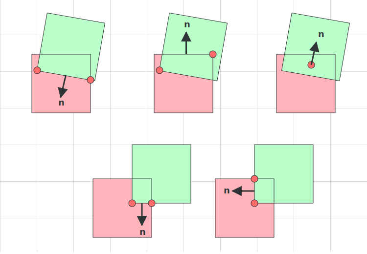

The core of any physics engine is the integration step - updating object positions based on their velocities.
Integration refers to integrals which you may remember if you ever took calculus.
If we have some graph or function that describes position over time, the derivative of that function is the velocity over time.
Going the other way, taking the integral of the velocity over time gives us the position over time.
So in our physics integration step, we're going to be estimating the integral of the velocity to get our object's new position each frame (and estimating the integral of the acceleration to get our object's new velocity each frame).
The most common way to do this is to use Euler integration (named after the Swiss mathematician Leonhard Euler).
It's used in popular physics engines like Box2D.
This is probably the most intuitive way to do it as well, and you might have actually already invented it yourself if you tried to make a character or object move in your first game.
Just multiply the velocity by how much time has passed since the last frame and add it to the object's position.
If there is acceleration such as from gravity, we first multiply the acceleration by how much time has passed and add it to the velocity.
velocity += acceleration * time
position += velocity * time
Here is a basic implementation of Euler integration in JavaScript which forms the foundation of our physics engine:
class Vec2 {
constructor(x, y) { this.x = x; this.y = y; }
add(other) { return new Vec2(this.x + other.x, this.y + other.y); }
sub(other) { return new Vec2(this.x - other.x, this.y - other.y); }
scale(scalar) { return new Vec2(this.x * scalar, this.y * scalar); }
}
class PhysObject {
constructor(x, y) {
this.position = new Vec2(x, y);
this.velocity = new Vec2(0, 0);
this.rotation = 0;
this.angularVelocity = 0;
}
step(dt) {
// Integrate position and rotation based on velocities and timestep.
this.rotation += this.angularVelocity * dt;
this.position = this.position.add(this.velocity.scale(dt));
}
}
class PhysWorld {
constructor() {
this.objects = [];
this.gravity = new Vec2(0, -9.81);
}
step(dt) {
// Apply gravity to all objects
for (const obj of this.objects) {
obj.velocity = obj.velocity.add(this.gravity.scale(dt));
}
// Update all objects
for (const obj of this.objects) {
obj.step(dt);
}
}
}
This is a basic physics simulation setup using Euler integration. We step the whole world by one timestep each frame, usually something like 1/60 seconds for a 60fps simulation. Each frame, we do a few things:
Apply gravity (-9.81 m/s²) to all objects' velocities. Since gravity is an acceleration (how much the velocity changes per second), we multiply it by the timestep to get the change in velocity. acceleration * time = velocity_change
Update all object's positions based on their velocities. velocity * time = position_change
Update all object's rotations based on their angular velocities. angular_velocity * time = rotation_change
There are also a few different variants of Euler integration.
Here we are using semi-implicit Euler (also called symplectic Euler) integration, which means updating velocity first then position.
Then there is implicit Euler integration, also called backward Euler, which is more complex and requires solving systems of equations and so is not generally used in real-time physics engines.
With semi-implicit Euler we're effectively calculating the velocity next frame, and then going 'back in time' using it to update this one.
If you update position using the velocity from this frame, then update the velocity after, you're using explicit Euler (also called forward Euler) integration, which is less stable and more prone to numerical drift, so in most physics engines you'll see a variant of semi-implicit Euler integration.
In our example here, updating position before velocity doesn't matter much in the case of gravity, but in more complex situations with constraints it's less stable and tends to add energy to the system if you do something like: update velocities based on gravity -> update positions -> solve constraints last.
In that case you'd be updating the positions before ensuring the constraints are satisfied, which could cause the objects to move into invalid positions and make the system less stable.
Note on accuracy:
Semi-implicit Euler integration is an approximation. Even with constant acceleration like gravity, we lose accuracy by updating in steps. Gravity in the real world accelerates objects continuously, not in discrete jumps. With gravity, the velocity at the start of the timestep isn't the same as the velocity at the end, but we use the end velocity to compute the entire position change. These errors accumulate over time, but for small timesteps the Euler method is stable and efficient enough that even professional physics engines like Box2D use it.
Interactive Example
Below you can see our physics simulation using semi-implicit Euler integration in action. Click the button to spawn boxes with random velocities. They're affected by gravity (-9.81 m/s²) but have no collision detection or constraints yet - just pure velocity integration.
Boxes with initial velocities falling under gravity. Uses semi-implicit Euler integration.
Verlet Integration
While we're not going to be using it for our physics engine, Verlet is another strategy to integrate positions of objects.
It has the advantage of making some things very simple to implement such as
cloth simulation,
ropes,
and soft bodies,
but most common physics engines don't use it because it's not feasible to use directly with contact constraints and rigid bodies.
Instead of tracking the velocity of each object directly, velocity is tracked implicitly by storing the current and previous position of each object.
The velocity would be given by (currentPos - previousPos) / timeStep.
This also means the timestep must be constant in a Verlet simulation.
Here's the same code that was in the previous section, but adapted to use Verlet integration instead of Euler integration:
class VerletObject {
constructor(x, y) {
this.position = new Vec2(x, y);
this.prevPosition = new Vec2(x, y);
this.rotation = 0;
this.prevRotation = 0;
}
step(dt, acceleration, angularAcceleration) {
// Calculate next position using Verlet formula
let movementOverDt = this.position.sub(this.prevPosition);
movementOverDt = movementOverDt.add(acceleration.scale(dt * dt));
const nextPos = this.position.add(movementOverDt);
// Calculate next rotation using Verlet formula
let rotationOverDt = this.rotation - this.prevRotation;
rotationOverDt = rotationOverDt.add(angularAcceleration.scale(dt * dt));
const nextRot = this.rotation + rotationOverDt;
// Roll positions and rotations forward
this.prevPosition = this.position;
this.position = nextPos;
this.prevRotation = this.rotation;
this.rotation = nextRot;
}
}
class PhysWorldVerlet {
constructor() {
this.objects = [];
this.gravity = new Vec2(0, -9.81);
}
step(dt) {
// Integrate all objects
for (const obj of this.objects) {
obj.step(dt, this.gravity, 0);
}
}
}
No explicit velocity vector: it is inferred from position - prevPosition.
Better energy conservation: small numerical errors do not snowball as fast, making orbits and springs noticeably more stable.
Fixed timestep assumption: because the formula hinges on a constant Δt you cannot safely vary the timestep from frame to frame.
For position constraints, Verlet makes things much easier.
For a distance constraint for example, you just move the objects within the constraint by modifying their positions directly and the velocity is automatically updated.
This not only is a lot simpler to implement, but ends up being much more stable for distance constraints on particles:
class VerletDistanceConstraint {
constructor(objA, objB, restLength, stiffness) {
this.objA = objA;
this.objB = objB;
this.restLength = restLength
this.stiffness = stiffness; // 0 to 1, where 1 is full correction
}
solve() {
// Push the two objects towards restLength apart
const delta = this.objB.position.sub(this.objA.position);
const dist = delta.length();
const diff = (dist - this.restLength) / dist;
const correction = delta.scale(0.5 * diff * this.stiffness);
this.objA.position = this.objA.position.add(correction);
this.objB.position = this.objB.position.sub(correction);
}
}
With this very simple implementation of a distance constraint with Verlet integration, we can already start simulating some realistic and performant cloth physics and soft bodies by connecting a ton of points together and watching the constraints push and pull the points into place.
Interactive Example
Cloth simulation and soft body physics with Verlet integration. Much more stable than Euler integration with velocity constraints at the same number of iterations.
Although Verlet has some impressive use cases, it's not a good fit for our physics engine where we'll primarily be dealing with velocity constraints and forces.
It's useful to know about though, and some physics engines combine Verlet or use hybrid methods to support cloth and soft bodies along with the typical semi-implicit Euler integration used in most rigid body simulations.
Differential Equations
Since Newton, mankind has come to realize that the laws of physics are always expressed in the language of differential equations.
— Steven Strogatz, professor of Applied Mathematics at Cornell University
Pretty much everything we'll do in this tutorial will be finding approximate solutions to physics equations.
While Verlet integration is more accurate than Euler integration for some things, it is still an approximation and accumulates similar error over time due to discrete timesteps.
There are more accurate integrators like RK4 (Runge-Kutta) for example which is an option in the PyBullet physics engine and is often used in robotics simulations, but even this and all other integrators are approximations.
To find the true or 'analytic' solution to a physics problem, as opposed to the approximate solution given by our Euler integration over timesteps, we would need to do some calculus and solve differential equations.
Differential equations are math equations that involve a function and its rate of change, what we call its derivative in calculus.
The term 'differential' refers to the small differences in variables such as dy or dx we use in derivatives and integrals.
True physics is not described by discrete time steps, but by continuous change over time described by differential equations.
Differential equations aren't at all required for this tutorial, but I wanted to explain them a bit for those interested (and for myself) and show you how you'd solve the differential equation for gravity as an example:
We can simulate objects falling under gravity at a constant acceleration of -9.81 m/s² with our PhysWorld and PhysObject classes, but like I said, this is innacurate due to the discrete timesteps we're taking each frame.
But what if we wanted to know the exact position at any time for an object under the continuous acceleration of gravity, not just these discrete steps?
To find the exact position, we can use calculus to work backwards from acceleration to position. We start with the acceleration due to gravity:
g = 9.81
Since acceleration is the rate of change of velocity, we can find velocity by taking the integral of acceleration over time.
To get the integral of this function, we can apply the power rule for derivatives backwards.
The power rule says that the derivative of xn is n * x(n-1).
So then the that means the integral of xn is x(n+1) / (n+1) + C, where C is the constant of integration, here it will be the initial velocity v₀.
In the equation above, f(x) = g = -9.81, the power of t would be 0 (anything to the power of 0 is 1 and the term disappears), so the integral is g * t(0+1) / (0+1) + v₀ which is just gt + v₀:
v(t) = gt + v₀
If we integrate this equation a second time using the power rule and sum rule (f(x) + g(x))' = f(x)' + g(x)', we get the position equation:
x(t) = ∫(9.81t + v₀) dt = 9.81t²/2 + v₀t + x₀
Where x₀ is the constant of integration, which represents our initial position. This gives us the classic kinematic equation:
x(t) = x₀ + v₀t + ½gt²
This analytical solution tells us the exact position of a falling object at any point in time, without any approximation error from discrete timesteps.
What we just did was solve a very basic differential equation for gravity using basic integration techniques from calculus.
Interactive Example
The interactive demo below shows the analytical solution (orange) vs. the Euler approximation (blue). Notice how the Euler path diverges from the true path over time due to accumulating errors. This error is small for short simulations but can become significant, which is why choosing the right integration method is crucial.
Comparison of the analytical solution vs. the Euler integration approximation. The Euler approximation slowly diverges from the true solution over time.
While gravity is relatively simple to solve analytically, most physics involves more complex scenarios. Spring forces, air resistance, collisions, and interactions between multiple objects lead to differential equations that are much harder or impossible to solve exactly. This is why numerical integration methods like Euler and Verlet are so valuable - they let us approximate solutions to complex physics problems that don't have neat analytical solutions.
The approximate Euler method is more than enough for our physics engine.
I just wanted to mention these other methods to give some context and deeper understanding into what we're doing.
Integration in Real Physics Engines
All that being said, the semi-implicit Euler method is still the most popular option for real time physics engines.
You can see it in the source code of various physics engines such as:
Box2D-Lite: Classic symplectic Euler, integrate velocities first, then solve constraints, update positions last.
Box2D: Also symplectic Euler with same integrate velocities -> solve constraints -> integrate positions update order just like Box2D-lite albeit with more complex logic to support the many more features full Box2D has.
p2.js: Symplectic Euler with same update order used here as well.
Chipmunk2D: Slightly different form, updating positions first -> add gravity and update velocities -> solve constraints. Still technically semi-implicit Euler and it's stable as constraints are solved before updating positions
Up Next
Position and velocity integration are the foundations of any physics engine.
These objects pass through each other for now, but this basic motion system is essential before adding forces, collisions, and constraints.
Throughout this tutorial, we'll learn more about physics concepts and build up the functionality of our engine as we do.
Next, we'll dive into rotation and some fundamental math operations we'll need to build a physics engine.
2. Rotation in Radians
In our physics engine, for all rotation we'll be using radians over degrees which most people are familiar with. Radians are far more convenient and have a lot of benefits. While degrees have a rather arbitray number of 360 for a full rotation, in radians a full rotation is 2π, which is the exact circumference of the unit circle (a circle with a radius of 1, reminder the circumfrence formula is 2πr).
So to convert from degrees to radians, we multiply by π/180. The fact that radians are based on the circumference of the unit circle is very useful, especially for many of the physics calculations we're going to do:
Radians end up being a much more natural way of working with angles in equations than degrees are.
For example, radians make it very easy to convert between angular and linear velocity.
To see why, imagine a wheel with a radius of 1 unit spinning at 1 radian per second.
A point on the edge of that wheel moves at exactly 1 unit per second. This perfect 1:1 relationship happens because radians are based on the unit circle's circumference.
For any wheel, the formula is simple: linear velocity = angular velocity * radius.
If you had used degrees per second, you'd have to first do an intermediate calculation between 360 degrees and the wheel's circumference, it would be linear velocity = angular velocity * π / 180 * radius, so with radians it's a lot easier to work with.
The relationship between angles and the dot and cross product also only becomes clear when you work in radians as we'll see further in this section.
An arc along a circle with the same length as the radius of that circle spans an angle of 1 radian. The circumference spans 2π radians. Animation is public domain from Wikipedia.
Interactive Example
Below is an interactive demonstration that shows this relationship between linear and rotational motion. The visualization shows a circle that can be "unrolled" into a straight line. Watch how the runner's motion on the straight track corresponds exactly to their circular motion, helping you understand why we measure rotational velocity in radians per second.
Visualization showing how circular motion maps to linear motion. Use the controls to unroll the circle and see how the runner's speed stays constant whether moving in a circle or straight line.
The 2D Cross Product Between a Scalar & Vector
The 2D cross product between a scalar and vector lets us calculate the linear velocity of a point on an object based on its angular velocity and the distance from the center of rotation. It is defined like this:
class Vec2 {
crossSv(scalar) {
return new Vec2(-this.y * scalar, this.x * scalar);
}
}
Where scalar is the angular velocity in radians, and the current vector is the offset from the center of rotation to the point we want to calculate the linear velocity of.
Why does this work?
Flipping a vector's X and Y to [-y, x] gives us a perpendicular vector - exactly what we need for rotational motion! When something rotates, every point moves perpendicular to its radius vector.
When we compute v.crossSv(scalar), we get a vector that is:
Perpendicular to the original vector (v)
Scaled by the angular velocity (scalar)
Pointing in the direction of rotation
As we learned above, on a unit circle (radius = 1), a point rotating at 1 radian per second moves at exactly 1 unit per second along its path. If it's not a unit circle, that speed will be scaled by its radius, which is exactly what the scalar cross product does:
If v has length 1 (unit circle), the result has length = angular velocity
If v has length 2, the result has length = 2 × angular velocity
If v has length r, the result has length = r × angular velocity
If angular velocity is negative, the perpendicular vector will be flipped in the opposite direction
The vector length acts as a "lever arm" - the further from the center, the faster the point moves:
Visualization showing how the scalar-vector cross product works.
The Dot Product
The dot product is another very useful operation that can be defined like this:
When you take the dot product of two vectors, the result you get is the length of one vector 'projected' onto the other. The dot product also measures how similar two vectors are. For 2 vectors of length 1, if they are pointing in the same direction, the dot product will be 1, if they are pointing in opposite directions, the dot product will be -1, and if they are perpendicular, the dot product will be 0. If the length of the vector you're projecting onto is not 1, the result will be scaled by the length of the vectors. You can try the demo below to see for yourself:
Visualization showing how the dot product measures how similar two vectors are.
That's pretty convenient. Now we have a way to project one vector onto another, and measure how similar their directions are. Will be very useful for our physics engine.
We'll use this later for contact constraints for example, when we want to project the repulsive force vector only in the direction of collision, and push the objects apart in that single direction.
But if you're like me, you're probably wondering why this even works out to be the case.
Let's work backwards from the idea that the dot product is basically like projecting one vector onto another, and rediscover it by finding a clever way to do that.
The first thing to notice about the operation of projection, is that it's a linear transformation which means it acts on all vectors uniformly.
That is to say, the same tip to tail rule of adding vectors still applies.
If we add any number of vectors, then project that, we'd get the same result as if we had projected each vector individually, and then added the projections up.
Here's a visual proof of this. Notice how the projections of each individual vector (red and green), added tip to tail, gets us to the same result as projecting the sum of the vectors (orange):
Taking the sum of all the vectors (orange vector), then projecting it, gets the same result as projecting each vector individually, then summing up all the projections.
Intuitively, this makes sense.
It's basically just flattening the vectors onto the line we're projecting onto, so their relative positioning is preserved, you can add them tip to tail then project them, or project them individually then add them up, and you'll get the same result.
For the standard X/Y axes, they are a pair of vectors which are perpendicular to each other.
In 2D at least, for each line, it has exactly one other line which is perpendicular to it, meaning all other lines are not perpendicular to the pair, and so have would have some parallel component.
So, from the perspective of some other line we are projecting X/Y axes onto, there is actually only one direction, and both the X/Y axes move along that exact same direction to varying degrees depending on the normal direction.
You can just add the projection results end to end because travelling along X by 1 or Y by 1, always just means moving along the line by the parallel component of X or Y.
It doesn't matter what order you do it in or how many times, each X and Y have some consistent and linear amount they cause movement on the line we're projecting onto.
This simplifies our task quite a bit. Now we just need to find a way to project the X/Y components individually onto some line. Then we can just add them up, and that will equal the projection over the X/Y vector.
Think of a vector V of length 1 pointing in any direction. What if we want to project V onto the X axis (corresponding to the vector [1,0])?
Well, because projection is like asking, how much of V points in the X axis direction? That is just V.x!
And, because projection is a symmetrical operation, projecting the X axis onto V is also V.x. By the same logic, projecting [0,1] or the Y axis onto V is just V.y.
And if either we wanted to project [2,0] or [0,2] onto V, we'd just multiply V.x or V.y by 2. This holds for any length. Just multiply V.x or V.y by the length of the vector you want to project onto.
Projecting the X and Y axes onto V gives us V.x and V.y, respectively.
Boom! Now we have a way to project any vector in the purely X or purely Y direction onto any vector of our choosing.
Here's the formula for projecting a vector onto the X and Y axes:
projection(V, [n,0]) = V.x * n projection(V, [0,n]) = V.y * n
And because we learned that projection is a linear transformation, for any vector V, we can just project its X and Y components individually, giving us the following formula:
projection(V, [n,m]) = projection(V, [n,0]) + projection(V, [0,m]) = V.x * n + V.y * m
This is the exact formula for the dot product, derived from scratch!
For more on the dot product and linear transformations, I highly recommend 3Blue1Brown's Essence of Linear Algebra series which gives excellent explanations of the dot product and many other linear algebra concepts.
Bonus:
The dot product also gives the exact same results as taking the cosine of the angle between two vectors (and scaling it by the length of the vectors if not normalized).
This is because the cosine is defined as the x-coordinate of a point on the unit circle corresponding to a given angle. Exactly what we're doing when we project one vector onto the x basis [1,0].
And because the dot product works for any angle, the only thing that matters is the relative angle between the two vectors, this results in the dot product being the same as the cosine of the angle between the two vectors.
If you notice, the cross product is actually just the same thing as the dot product, but the second vector is rotated 90 degrees clockwise.
If you just swap a vector's X and Y components, then negate the Y component of that vector, you get a vector that is exactly perpendicular/rotated 90 degrees clockwise around the origin.
Knowing what we know about the dot product, and how it measures how much two vectors are pointing in the same direction, by the same token, the cross product measures how much one vector is pointing perpendicular another vector.
If you imagine a box, and you push exactly in the middle of one of its sides towards its center of mass, the box won't spin at all.
You pushed it perfectly on-center, so it will just have a linear velocity moving away from you.
On the other hand, if you push the box off-center at its corner, it will start to spin and have some angular velocity.
You could measure how much it would rotate like so:
If you take the dot product of the push direction with the direction towards the center of mass, that will measure how perfectly 'on-center' your push is. If you get this to 1 (perfectly towards the center), then the rectangle will have no spin when you push it.
On the contrary, if you take the opposite of that, which is the dot product of the push direction with the direction pointing exactly perpendicular to the center of mass, that will measure how much you're pushing off-center, and tell you how much spin you're going to cause.
You can think of the cross product in 2D as the 'perpendicular dot product.'
The cross product is equal to the sine of the angle between the two vectors.
This is because sin(θ) is defined as cos(θ - 90°), and the dot product is the cosine of the angle between the two vectors.
The cross product is just the equivalent of rotating one vector 90 degrees counter-clockwise, so the cross product is the sine of the angle between the two vectors.
This will be very useful in the next section for calculating the torque (a measure of how much a force will cause an object to rotate).
3. Force, Mass, and Torque
Just as force causes linear acceleration, torque causes rotational acceleration.
And just as mass resists linear acceleration, moment of inertia resists rotational acceleration.
In this section, we'll explore mass, forces, and torque to help us simulate rigid bodies for our physics engine.
Isaac Newton's 3 laws of motion are:
An object at rest stays at rest, and an object in motion stays in motion with the same speed and in the same direction unless acted upon by an external force.
The acceleration of an object is directly proportional to the net force acting on it and inversely proportional to its mass.
Whenever one object exerts a force on another object, the second object exerts an equal and opposite on the first.
In hindsight, these seem obvious, but at the time, they were a major breakthrough.
For example, the first law was a major departure from Aristotle's 2000 year old idea that objects naturally came to rest.
It took many thousands of years of thinking and experimentation to get to this point.
Newton formulated the laws of motion, unifying the previous ideas of great thinkers like Galileo and Descartes, and establishing the foundation for classical mechanics.
Mass & Force
Mass is a measure of an object's resistance to linear acceleration. The more mass an object has, the more force is needed to accelerate it.
This is described by Newton's second law:
Force = mass * acceleration
Rearranging this, you can see the amount of force needed to accelerate an object scales with its mass:
acceleration = Force / mass
To affect an object's velocity, you need to apply a force over time (acceleration * time = change in velocity). This is called an impulse, and multiplying both sides by time we get the formula:
change in velocity = Force * time / mass
We also have momentum, a measure of the objects motion, which combines the object's mass and velocity.
Momentum is always conserved. When two objects interact, any momentum lost by one is gained by the other. It is given by the equation:
Momentum = mass * velocity
On one hand, this is all pretty intuitive. The more mass something has, the more it resists movement in this clean relationship with force.
Objects can trade momentum freely amongst themselves, but the total momentum of an isolated system stays perfectly balanced.
On the other hand, there is a lot of underlying complexity to what's going on here.
Many other properties like torque and moment of inertia arise out of F = ma, so it's crucial to understand it on a deep level to really understand the physics we'll need for our engine.
Historical note:
The concept of "force" as we understand it today emerged gradually through the Scientific Revolution. Before Newton, natural philosophers struggled to explain motion. Galileo first conceptualized the idea of inertia in the 17th century, stating that a body in motion will remain in motion unless acted upon by an external force, challenging Aristotle's 2,000-year-old belief that objects naturally came to rest. Descartes introduced the concept of inertia by way of his "laws of nature" in The World (written 1629–33), proposing that motion continued in straight lines. But it was Newton who revolutionized physics by precisely defining force in his 1687 Principia. The concepts invoked in Newton's laws of motion — mass, velocity, momentum, force — have predecessors in earlier work Laws of Motion: Galileo and Newton, but Newton synthesized these scattered ideas into F = ma, showing that force wasn't just about pushing and pulling, but was the fundamental agent that changes an object's motion. This mathematical relationship finally explained everything from falling apples to planetary orbits, unifying terrestrial and celestial mechanics for the first time.
Another important concept is the amount of Work (the transfer of energy) a force does.
This is equal to Force * distance:
Work = Force * distance
This concept of Work may seem unintuitive at first.
If we push a pebble and a boulder the same distance with the same force, we'll have done the same amount of work?
Actually, yes, the way it works out is that the pebble and the boulder will have the same exact amount of kinetic energy.
The boulder's final velocity will be much less than the pebble's, and so their kinetic energy would ultimately match:
Kinetic energy = 1/2 * mass * velocity²
Kinetic energy is a measure of the accumulated Work that has been done on an object to bring it to its current velocity.
This formula is essentially working backwards from the current velocity to determine the total work that must have been done on the object to get it there.
The formula above can be derived directly from just F = ma and Work = Force * distance using calculus.
Energy, like momentum, is always conserved, which means that the total amount of energy in a closed system remains constant over time.
It's important to remember that the equations for Work, Kinetic Energy, and all the others shown so far, are formal definitions.
They might not align with how we'd use the terms in everyday life.
For example, if you're holding a 100lb weight above your head in the same spot for 10 seconds, you'd probably say, "Wow. That was a lot of hard work and took a lot of energy."
But by the physics definition, you've done no Work at all. You applied force to the weight, but it didn't move, and since Force * distance = Work, you've done 0 Work and transferred 0 energy to the weight.
In fact, if you wavered a bit, and lowered the weight, you'd have done negative Work by the formal definition.
Another example, is if you pushed a cardboard box across your room with some amount of force, you can figure out how much Work you did by multiplying the force by the distance you pushed it.
Likewise, if you push a piece of stonehenge, the deathstar, godzilla, or anything else impossibly heavy requiring much more effort the same distance across your room with the same force, you've done the same amount of Work as when pushing the cardboard box.
If your floor was ice instead of carpet and frictionless so the objects retain their speed, the kinetic energy you put into all of these objects would be the same as well.
Concepts like velocity, acceleration, momentum, and mass are all pretty intuitive and can be tied directly to our everyday experience.
When you start getting into Force, Work, and Energy, things become a bit more abstract and it may not be so easy to reconcile them with our everyday experience.
Historical note:
The equation Work = Force * distance wasn't actually formally defined until over a hundred years after F=ma.
Below you can see a demo of the same force (1N) applied to a pebble and a rock over 1 meter, and see how their momentum, velocity, and kinetic energy change over time:
The same force is applied to a pebble and a rock over 1 meter.
The pebble has less mass, so it accelerates faster and ends with a higher velocity.
The total energy of both at the end is equal.
Newton's second law of motion, F = ma, is the soul of classical mechanics. Like other souls, it is insubstantial. The right-hand side is the product of two terms with profound meanings. Acceleration is a purely kinematical concept, defined in terms of space and time. Mass quite directly reflects basic measurable properties of bodies (weights, recoil velocities). The left-hand side, on the other hand, has no independent meaning. Yet clearly Newton's second law is full of meaning, by the highest standard: It proves itself useful in demanding situations. Splendid, unlikely looking bridges, like the Erasmus Bridge (known as the Swan of Rotterdam), do bear their loads; spacecraft do reach Saturn.
— Frank Wilczek, Nobel Prize-winning physicist, 2004 (Physics Today)
If you're feeling that the ideas of force and energy are a bit abstract or arbitrary, you're not alone.
As you look deeper into the concepts of force and energy, you'll very quickly run into some deep philosophical questions about what these ideas actually represent.
In a sense, it could be debated whether force is really 'real' or just a mathematical invention to simplify our calculations.
For our purposes (developing a 2D physics engine), it doesn't actually matter.
What is important, is to know that momentum and kinetic energy are conserved in elastic collsions (the kind we'll be dealing with in our 2D physics engine, where bodies bounce off each other), and that F = ma is a practical mathematical tool that will help us understand how bodies move and rotate.
While I wanted to mention it for completeness, energy is not really necessary to understand the rest of this.
The only 'miracles' you need to believe in are F = ma and that momentum exists and is conserved.
We can derive the entirety of rigid body motion needed for our physics engine just from this.
Next, we'll discover torque and rotational movement and see how it arises out of F = ma when applied to each of the individual particles of objects.
Torque & Moment of Inertia
The equations for torque and its relationship to angular acceleration are (where × is the cross product with the force application point's offset from the center of mass):
Torque = Force × r
Torque = moment of inertia * angular acceleration
Torque is a measure of how much force applied off center causes something to rotate, and moment of inertia is a measure of how much something resists that rotation.
The more spread out an object's mass is from the center of rotation, the higher the moment of inertia is, and the more torque is needed to cause the same amount of rotation.
You can see this effect in real life, like a figure skater pulling in their arms to spin faster, or, if you spin in a chair, and then extend your arms, you'll slow down because your moment of inertia rises:
Extending limbs moves mass farther from the center, increasing the moment of inertia and slowing the rotation (like a figure skater pulling in their arms to spin faster).
The equations for torque, Torque = Force × r, and Torque = moment of inertia * angular acceleration are actually not separate at all from the equation for linear acceleration, F = ma.
Torque's effect on angular acceleration is simply a result of F = ma applied to each particle of the object, and we can derive it from that:
If we have a particle connected to some center point by a massless rod, that particle will be constrained to move in a circular path around the center point, and so its velocity will be perpendicular to the rod at all times.
Remember that with how radians are defined by the unit circle, moving at angular_velocity radians per second, will equal a linear velocity at any given point of angular_velocity * radius per second.
The same relationship applies to acceleration, linear_acceleration = angular_acceleration * radius.
Finally, because Force = mass * acceleration, we can plug in the above to figure out the force required to add angular acceleration to our spinning point, Force = mass * angular_acceleration * radius.
To make the particle spin, we must apply a force perpendicular to the rod.
This is why the equation Torque is the cross product of the force and the vector from the center of mass, because the cross product gives us the component of the force which is perpendicular.
Particles constrained to a center point. When they spin around, their linearly velocity is perpendicular to the center and proportional to their radius.
They each resist motion according to F=ma in the perpendicular direction.
If we attach multiple other points to our object, so that it is now multiple points rotating in unison, all moving linearly and perpendicular to their radius, the total force required to spin the object would then be equal to the sum of all the forces on each particle individually, calculated by Force = mass * angular_acceleration * radius.
This essentially what rigid bodies are, a bunch of atoms connected by constraints so that when it rotates, each particle is constrained to move perpendicular to its radius from the center of mass.
So this is actually exactly how moment of inertia is calculated.
Again the equation for torque is Torque = Force × r, essentially the perpendicular component of the force scaled by the radius.
So then to get our equation to match, we can multiply each side by the radius: Force * radius = mass * angular_acceleration * radius * radius, or just Torque = mass * angular_acceleration * radius².
Rearranging it we can see the resistance term: angular_acceleration = Torque / (mass * radius²), the amount it accelerates angularly will be equal to Torque divided by mass * radius².
So then we can just calculate that resistance term mass * radius² for each particle and add them up, giving us the equivalent of mass for rotation, moment of inertia.
Here's how we can represent this calculation for moment of inertia in pseudocode:
// Pseudocode for computing the moment of inertia of an object
function computeMomentOfInertia(atoms, centerOfMass) {
let momentOfInertia = 0;
for (let atom of atoms) {
let x = atom.x - centerOfMass.x;
let y = atom.y - centerOfMass.y;
let r2 = x*x + y*y; // squared distance from axis (r² = x² + y²)
momentOfInertia += atom.mass * r2; // add contribution to total inertia
}
return momentOfInertia;
}
The above function is equivalent to the formal mathematical definition you'll see for moment of inertia, just expressed in code:
I = Σ mᵢ rᵢ²
Where mᵢ is the mass of the ith particle, and rᵢ is the distance of the ith particle from the axis of rotation.
Moment of Inertia Formulas for Common Shapes
While the particle sum I = Σ(miri2) is the fundamental definition, calculating it directly for continuous objects requires calculus (integration).
Some very smart people have worked out the formulas for moment of inertia about the center of mass for many objects already, and you look them up online for most common shapes:
Solid Disk/Cylinder (radius R): I = (1/2)MR2
Solid Sphere (radius R): I = (2/5)MR2
Rectangle (width w, height h): I = (1/12)M(w2 + h2)
Thin Rod (length L, rotating about center): I = (1/12)ML2
Notice how these formulas depend on the mass (M) and dimensions (like R, w, h, L). They represent the result of summing up infinitely many infinitesimal masses at their respective squared distances.
Interactive Example
The interactive example below demonstrates how moment of inertia can be calculated as a sum of many particles. By looping through each particle using the function computeMomentOfInertia above, we can calculate an approximation of the moment of inertia of the entire object. With a sufficient number of particles, this would give us an accurate, albeit inefficient calculation of the moment of inertia.
The more particles distributed away from the center of mass, the higher the moment of inertia, scaling linearly with the total mass of the object.
From Forces to Impulses
Now that we know the equations for force and torque, we can apply them and create the quintessential function for our physics engine and all the interactions within it, applyImpulse.
For our physics engine, we'll be working with impulses rather than forces, because they're a lot more convenient and the math is simpler.
An impulse is a force applied instantanously, or over a short period of time, to change the object's velocity.
In reality, impulses do not exist. To instantanously change an object's velocity, you would need to apply an infinite acceleration, and therefore infinite force.
However, we can approximate an impulse by applying a force over a very short period of time, which simplifies the math.
The standard equations for how impulse affects an object's acceleration are:
acceleration = force / mass
angular acceleration = torque / moment of inertia
Acceleration multiplied by time, gives us the change in velocity. So we can multiply each side by the time step (dt) to get the change in velocity:
change in velocity = force * dt / mass
change in angular velocity = torque * dt / moment of inertia
Now instead of using force * dt and torque * dt, we can just substitute in impulse to those equations.
We group force and dt together, solving for both of them, not worrying about either value individually, this gives us a single measure of the total velocity change scaled down by the mass and moment of inertia, over whatever timestep we choose.
Again, this is not exactly physically accurate, but it is essentially approximating a force applied over a very short period of time, and allows us to simplify the math for applying impulses/forces to our bodies each frame:
Below is an interactive demonstration that shows how applying an impulse to an object changes its linear and angular velocity. You can apply an impulse to an object and observe its resulting motion:
Interactive demo showing the effects of linear and rotational velocity. Click and drag to apply forces and observe the resulting motion.
Why Do Objects Rotate at All?
Note: This is an optional section, and can be skipped if you're not interested in the why behind how force and torque work the way they do.
When I learned the above standard explanations behind force and torque, while they did explain a lot, I felt they were deceptively simple, and there were still a lot of unanswered questions they didn't address.
Such as, why is it that, if a force is applied off center, it adds more kinetic energy to the object? It's the same force, so intuitively that didn't make sense that it causes more movement.
Also, the explanation for torque made sense when a body is fixed so it can only rotate and not move, but how about when it's not fixed and both linear and rotational velocity are involved?
Why does that formula work so cleanly to describe both how it moves and rotates in all cases?
I'll try to answer those questions and more in this section, where we'll take a deeper look at what rotation actually is and why it happens at all.
To start, let's look at an approximation for what all objects are, a collection of atoms or particles connected by a bunch of springs constraining them together.
And let's look at the simplest possible object by that definition, two particles constrained by one massless spring. I'll call this object a barbell.
The particles can trade velocity and energy amongst each other via the spring, such as if you push one it will affect the other, but the spring doesn't add any energy to the system, and the momentum of the system as a whole is always conserved.
Here is the perplexing case where you applied the same force over the same time to both objects at different points, but the top one that got its force applied off-center ends up with twice the total energy:
Two barbells (each 2 particles constrained together by a spring). The top is applied a force of 2 in the X direction at the top barbell. The bottom is applied with a force of 1 in the X direction at each particle. This results in different total energy.
It seems like the top barbell got more energy, and a spin for 'free' from the same force.
There are a couple different ways to view what's happened.
One, the top force was applied over a longer distance.
Even though it was applied over the same time, it started rotating away from where we applied the force, and so the same force was applied over a longer distance, leading to more energy, per Work = Force * distance.
Two, if we applied this force as an impulse/instantanously, for the bottom barbell we would have accelerated each particle to a velocity of 1m/s.
The equation for kinetic energy is 1/2 * m * v², so if each particle has a mass of 1 that would equal 0.5J of energy added to each, for a total of 1J.
For the top barbell, we would have accelerated the top particle to 2m/s (as it traded momentum with the bottom barbell, equaling out to 1m/s for the whole object), but since the equation for kinetic energy scales with velocity squared, that would be 1/2 * 1 * 2² = 2J, doubling the speed costs 4 times as much energy.
The spring constraint causes the particles to trade momentum or velocity in the X direction, so it moves at the same speed as the bottom barbell, but also ends up transferring some of that into each of their Y velocities, and so energy is conserved.
Note:
The reason why energy (1/2 * m * v²) is the thing that is conserved, and what that actually means is somewhat of an abstract or philosophical question, and took many smart people thousands of years to discover.
Here is a StackExchange post that provides one explanation.
Momentum is also conserved, but only as a vector quantity. As the top barbell spins, the particles gain a Y velocity/Y momentum, but the two particles' Y velocities are always equal and opposite, so the total Y momentum of the object is still 0.
If you've ever seen a slow-mo video of a person getting punched in the face, it will be all the more clear that sometimes it's very accurate to think of objects of being a springy collection of particles which can squish, bend, and twist.
Even very rigid objects are basically just a collection of very stiff springs.
Looking at objects from the perspective that they are essentially a collection of particles connected by springs, we can investigate and see how the workings of Force and Torque arise.
Applying a force to some particle on one of the barbells is just like applying force at some point on an object.
Regardless of which particle we apply the force to and in which direction, the spring will trade momentum between the particles while keeping the total X and total Y momentum, as well as the total kinetic energy the same as what we put in.
So, no matter where you apply a given force on an object and in which direction, it will always result in the same amount of linear movement even if it causes rotation too.
Applying a force of 2N to the barbell of mass 2 in any direction and at any point will always result in a 1 m/s velocity.
For torque, we can look at the example of a single particle with a spring constraint.
The reason the particle rotates at all when pushed off center is due to the spring which pushes and pulls it to a fixed distance from the center.
As the particle drifts away from the center, the spring expands and trades energy with the particle. On the way back, it contracts and transfers the exact same amount of energy back into the particle.
These symmetric oscillations end up trading the particle's X and Y velocities, while keeping the same total energy of the system, leading to rotation:
A single particle with a spring constraint. The force is applied at the top, but the particle ends up spinning around the center point.
If the spring oscillations are small enough, the particle basically just rotates around in a circle, keeping the same momentum you put in given the torque by the standard formula Torque = Force * Distance.
Less energy is stored in stiffer springs as well, so becomes just angular momentum/kinetic energy in the system in the limit.
Now we're ready to understand the full picture of torque and force for moving objects and how it arises with 3 points:
The total momentum of the object is conserved (as well as the direction of that momentum).
Objects spin because of the push and pull of the springlike forces between their particles.
Springs oscillate back and forth cyclically.
Because of point 1, we know that F=ma applies, and objects will distribute the momentum through themselves, but the total momentum and movement direction is the same.
This also means that the center of mass will move in a straight line, just the rest of the particles will rotate around it.
It's obvious that with a soft body spring configuration the object will begin to rotate some amount when pushed off-center, but how much exactly?
To understand an object's rotation when pushed, we can at least work out that because the total momentum is conserved, opposing points (mirrored over the horizontal axis over center of mass) will always 'cancel out' and average to the same velocity as the object itself.
If one particle at the top is rotating forward at some rate, that particle will be moving faster than the velocity of the center of mass of the object, so there must be an opposing one on the other side rotating the same speed but backwards, to cancel it out and conserve momentum.
Because we are dealing with perfect/idealized springs in our simulations, we know they expand and contract in a cyclical manner, retaining all energy in the system.
In a perfect spring system with no energy loss, if you pull back the spring and let it go, it will contract and then continue to oscillate back and forth between the distance you initially pulled it to and its contracted position.
It's the same if you apply an impulse to that spring, the object will oscillate back and forth, at some point always returning to/passing over its initial velocity while it oscillates.
This also extends even if the spring is not pinned to a fixed point.
You can see the two particle's velocities will oscillate as the spring push and pulls, but they do so cyclically, always passing through their initial velocity (x velocities of 0 and 2 in the below "Horizontal" example):
Objects on springs oscillate cyclically, trading velocity but always passing through their initial velocity.
In the "Vertical" mode in the demo above, you can see the particle's velocities after initial impulse are 2 and 0, for the top and bottom particles respectively.
The spring smoothly and steadily oscillates, trading X and Y velocities to cause rotation, but always returns to the initial velocities of the particles.
The reason for this is that the spring starts at rest, holding 0 energy, then as it stretches, it begins trading energy/momentum symmetrically between the particles.
Once the spring contracts back to its original length, it has traded all the energy back to the particles symmetrically, opposite of the energy it stored, and so their velocities must be the same as when they started.
Now we can reason about how and why the object rotates. So for the vertical barbell, we apply an impulse of 2kg·m/s, and with a mass of 2kg, the velocity of the whole object is 1m/s.
The object also has some resulting rotation from the impulse.
We push the top particle and it has an initial speed of 2m/s, the whole object will move at 1m/s (avg of both particles' speeds), so the relative velocity of the top particle is 1m/s and the bottom one would be -1m/s at that moment.
Even though our object is springy and stretches and squishes trading around momentum internally a bit, it's still overall an object that must obey conservation of momentum, including the centripital momentum of the particles around the center of mass (angular momentum).
We can say that the angular momentum then is 1kg·m²/s for each particle as they are both moving at a speed of 1 m/s and 1m from the center of mass, so 2kg·m²/s for the barbell object.
Angular momentum is always conserved, so regardless of how the spring trades momentum, the angular momentum and therefore the average rotation speed is going to stay constant, at -1rad/s clockwise.
This -1rad/s rotation speed is exactly what we'd expect for a real rigid body with the same impulse applied to it.
Calculate the barbell's moment of inertia using the formula moment of inertia = mass * radius² on each particle and summing it up you get 2kg·m².
We are applying an impulse of 2kg·m/s exactly perpendicular at distance 1 from the radius so per Torque = Force * Distance that will generate a torque of 2kg·m²/s².
Now we can use the formula angular_acceleration = Torque / moment_of_inertia to get the angular acceleration, angular_acceleration = 2kg·m²/s² / 2kg·m² = 1rad/s².
Integrate that over time to get the angular velocity, angular_velocity = angular_acceleration * time, and you get -1rad/s.
In reality we don't have perfectly springy soft body objects with zero energy loss, there will be some damping and different conditions, but ultimately angular momentum is still going to be conserved, and so real life objects will behave with the same principles.
This illustrates how the formula for torque works out cleanly to be the same for freely moving objects.
It happens innately out of the same F=ma formula applied to the individual particles.
Also, I didn't program kinetic energy specifically into any of the demos, just equal & opposite forces applied to particles which hold momentum, but you can see that also energy conservation arises naturally from momentum and F=ma applied to particles as well:
The effect of torque is the same for objects fixed to only rotate around their center of mass and freely moving objects.
Hopefully these examples have helped you understand the dynamics of force and torque.
It's not necessary to understand all this at a low level, but it's just something I wanted to do to satisfy my own curiosity and make the equations feel a bit less opaque.
4. Equality Constraints
In this section we'll be implementing velocity equality constraints. Simply put, the constraint will enforce the relative velocity of the constraint points to always equal 0.
Equality constraints are useful for creating chains of objects or ragdolls whose joints can freely rotate, and will also lay the groundwork for other types of constraints as the math is very similar. This is probably the most complicated part of the tutorial.
What are constraints?
Constraints are what are used in physics engines to handle contact resolution (pushing objects apart when they collide), things like chains of objects linked together, and really just about any interaction between objects you want to simulate.
Everything starts with the idea of position constraints.
Take this skateboarder skating on the half pipe.
His board's position p is constrained to the surface of the half pipe, and always must maintain a distance of 0 to it.
This is the position constraint.
However, position constraints are not super convenient to work with in physics engines.
It wouldn't be very realistic to constrain objects from colliding by just teleporting their positions apart if they are touching.
So instead, we use velocity constraints.
Instead of directly constraining the function C, we constrain its derivative, C', which in this case would be the velocity of the skateboarder along the normal of the ramp.
By using velocity constraints, in the case of collision, objects will be pushed apart with force when they are overlapping and bounce away from eachother realistically.
But ultimately, everything comes back to position constraints, and velocity constraints are just a way to indirectly constrain the position.
A skateboarder constrained to a half pipe surface. Idea for this visual & explanation from Erin Catto's GDC 2014 talk on constraints which I recommend reading for more info on this topic.
Revolute Constraint
Below is the code for the RevoluteConstraint class. It is a simple constraint that keeps the distance between 2 points on 2 objects equal to 0 distance from each other. Think of it like nailing two objects together, but letting them freely rotate around the point they're nailed together at. I'll explain each part of the code in the next sections.
The goal of the RevoluteConstraint is to minimize its velocity and position error values. C is the position error, which is the distance between the 2 points on the 2 objects that are nailed together. Cdot is the velocity error, or the speed at which the 2 points on the 2 objects are diverging.
In calculus terms we would call these 2 variables:
C which is the constraint's position error.
C′ (C prime, also known as C dot, or just the first derivative of C), which is the rate of change of the constraint's position error, a.k.a. the velocity error. In plain terms, it's the velocity that the constraint is moving away from the target position.
We want the velocity error to be 0 (meaning the points are not currently moving away from each other at all). And we also want the position error to be 0 (meaning the constraint is properly in place and the points are nailed together).
To do this, we need to apply impulses to the 2 objects every frame. Based on the constraint error values, and the point at which the objects are nailed together, we'll calculate an impulse to try to correct their velocities before they drift apart
In a perfect world/simulation with 100% accuracy, we could solve for just the velocity error. Before the constraints ever have a chance to drift apart, apply an impulse to cancel out any difference in velocity, and keep the relative velocity of the constraint points always perfectly at 0.
In reality, if we only solve for the velocity error, it would be very unstable. Due to small numerical errors frame to frame, the constraint would slowly drift away from the target position. To fix this, we need to also solve for the position error. This is where the bias term comes in.
Baumgarte Stabilization
Basically, we feed a tiny amount of the position error (the bias term) into the velocity error to encourage the constraint to converge to the target position.
So, if the constraint moves away from its target position on the X/Y axes, the velocity error on those axes will increase slightly as well. This will cause the constraint to overshoot/overcorrect when solving for the velocity error, and snap it back to its target position.
We scale the position error by a small constant called beta, (here we use 0.1, chosen because it seems to work well from my testing) and divide it by the time step (dt) to convert from position units to velocity units. This is called Baumgarte Stabilization:
// bias term
const bias = C.scale(this.beta / dt);
// Then, we add the bias term to Cdot when solving for the impulse
const impulse = mat2x2Solve(this.K, Cdot.add(bias).scale(-1));
Baumgarte stabilization is one of the most common and simplest ways to stabilize constraints. The method was created by Jürgen W. Baumgarte in 1972, who introduced it as a way to stabilize constraints in physics simulations by modifying the equations of motion to include feedback terms that counteract constraint drift. It might not be the best, but it's simple and easy to implement so we'll use it here. A good alternative that's only slightly more complex is mass-spring soft constraints like Box2D uses.
The Constraint Matrix
To find the exact impulses needed to apply to each body to counteract the velocity error (Cdot) at the constraint points, we will need to account for several factors at once:
How much the mass of the 2 bodies will resist motion of the constraint points in the X and Y directions
How much the moment of inertia of the 2 bodies resisting rotation contributes to resistance to motion of the constraint points in the X and Y directions
How applying force off center could act as a lever to cause the bodies to have rotational velocity, thus affecting the constraint point velocity, increasing the velocity error (Cdot).
How pushing in the X direction can cause motion in both the X and Y directions due to rotation, and same with pushing in the Y direction.
Note:
The mass matrix and all these factors are concerned with the point of application of force (the constraint points).
Cdot is the relative velocity of the constraint points, not the relative velocity of the bodies themselves.
Not only does the matrix account for the mass and inertia, but also calculates the effect of rotation on the (X/Y) velocity of the constraint points.
There's many different factors here to account for all at once to perfectly get the impulse we need which would make Cdot = 0. It ends up being a system of equations (2 variables and 2 equations), which can also be solved using a 2x2 matrix.
After solving the matrix, we will get an impulse vector that when scaled by the body's masses, and applied as rotation scaled by their moments of inertia, will cause Cdot (the relative velocities of the constraint points) to equal 0.
Deriving the Constraint Matrix
We can derive the matrix from these 4 lines which applies the impulse to the bodies:
The matrix is essentially predicting how these lines will affect the relative velocity of the constraint points for a given impulse.
When multiplied with any given impulse, the matrix should output what the change in relative velocity of the constraint points will be after applying the impulse. If we can construct a matrix that does this, we can solve for the impulse needed to create a change in relative velocity of exactly -Cdot, cancelling out the velocity error and making Cdot = 0.
Let's write out how each line will affect the velocity of the constraint points. vA and vB are the velocities of the constraint points, and ωA and ωB are the angular velocities of the bodies. Δ is the symbol for change in velocity. J is the impulse vector, and × denotes a cross product operation. Each of these lines is a direct translation of the lines of code above:
By adding the velocity change due to linear motion and the velocity change due to rotation (using the cross product with the lever arm vector), we get the total velocity change at each constraint point:
ΔvelA = ΔvA + ΔωA × rA
ΔvelB = ΔvB + ΔωB × rB
Plugging in the values from the previous equation, we get:
And the second cross product is the 2D scalar form which goes like s × [x, y] = [-s * y, s * x], so we can calculate that and fully break everything into its X and Y components:
And now by subtracting ΔvelA from ΔvelB, splitting into X and Y components, and doing a final factoring out of Jx and Jy, we can get this big equation which will tell us the change in relative velocity of the constraint points (Cdot) for any given impulse (Jx and Jy):
ΔCdot.x = Jx * (mA + mB + rA.y² * iA + rB.y² * iB)
+ Jy * (-rA.x * rA.y * iA - rB.x * rB.y * iB)
ΔCdot.y = Jx * (-rA.x * rA.y * iA - rB.x * rB.y * iB)
+ Jy * (mA + mB + rA.x² * iA + rB.x² * iB)
Now if you're familiar with matrices, you can see that this is a system of 2 equations (ΔCdot.x = ... and ΔCdot.y = ...) and 2 unknowns (Jx and Jy). If we formulate the same exact formula above as a 2x2 matrix, we get:
From our calculations above put in matrix form, notice each term has a clear physical meaning:
K[0][0]: When you push horizontally (X direction), this tells you how much the constraint points will move horizontally in response.
K[0][1]: When you push horizontally (X direction), this tells you how much the constraint points will move vertically (Y direction) as a side effect of rotation.
K[1][0]: When you push vertically (Y direction), this tells you how much the constraint points will move horizontally (X direction) as a side effect of rotation.
K[1][1]: When you push vertically (Y direction), this tells you how much the constraint points will move vertically in response.
Boom! We have a matrix, that when multiplied with any impulse vector, will output the change in relative velocity of the constraint points (Cdot).
Solving the Matrix System
Like I said before, now we have a matrix that when multiplied with an input vector, will output the change in Cdot:
K × impulse = velocity_error
We can formulate the equation for ΔCdot as a 2x2 matrix, because it exactly matches the structure of a matrix. The way 2x2 matrix by vector multiplication is defined is shown above, and you'll see, that the resulting X/Y vector (If you multiply impulse J it with the entries of matrix K) comes out to exactly our equation for ΔCdot. Next we need to use that matrix to solve for ΔCdot = -Cdot.
Formulating our equations for ΔCdot.x and ΔCdot.y as a matrix (and therefore a standardized system of linear equations) gives it a bunch of convenient properties, and now there are multiple paths we can take to solve them by leveraging algebra/linear algebra rules.
You could do substition using some basic algebra, and balance the equations solving for Jx and Jy one at a time.
You could do a full matrix inversion, which would then give you another matrix that when multiplied with the velocity error, would give you the impulse (going the opposite way, K * impulse = velocity_error, whereas after it's inverted, K⁻¹ * velocity error = impulse).
But since a lot of this tutorial is based on learnings from Box2D, we'll use a mat_2x2_solve(mat, b) with the same logic that Box2D uses to solve the equations:
// 2x2 matrix solve using Cramer's rule
function mat2x2Solve(mat, b) {
const a11 = mat[0][0], a12 = mat[0][1];
const a21 = mat[1][0], a22 = mat[1][1];
const det = a11 * a22 - a12 * a21;
const invDet = det !== 0 ? 1.0 / det : 0;
return new Vec2(
invDet * (a22 * b.x - a12 * b.y),
invDet * (a11 * b.y - a21 * b.x)
);
}
The mat_2x2_solve function above uses Cramer's rule. If you want to learn more about it, I'd recommend 3Blue1Brown's video on the topic. You could also just use basic substition, and you will end up with an equivalent formula:
Notice that the denominator (K[0][0] * K[1][1] - K[0][1] * K[1][0]) is exactly the determinant of the K matrix, and the same formula is used above in mat_2x2_solve. So we get an equivalent result to the Cramer's rule method.
Now that we know how to solve the equation for -Cdot, let's finally apply the proper impulse to all of our constraints, solving them!
class RevoluteConstraint extends Constraint {
// ...
solve(dt) {
// ...
// Solve the matrix system
const impulse = mat2x2Solve(this.K, Cdot.add(bias).scale(-1));
// Apply the impulse to each body, weighted by mass & inertia, to make Cdot = 0
this.bodyA.velocity = this.bodyA.velocity.sub(impulse.scale(mA));
this.bodyA.angularVelocity -= iA * rA.cross(impulse);
this.bodyB.velocity = this.bodyB.velocity.add(impulse.scale(mB));
this.bodyB.angularVelocity += iB * rB.cross(impulse);
}
}
class PhysWorld {
// ...
update(dt) {
this.solveConstraints(dt);
}
solveConstraints(dt) {
for (const constraint of this.constraints) {
constraint.update();
}
for (const constraint of this.constraints) {
constraint.solve(dt);
}
}
}
Note:
Much of the code in this section is based on Box2D's implementation of constraint solving, see here for the original point constraint solving implementation in Box2D's revolute constraint.
Interactive Example
Below is an interactive demonstration of the full revolute constraint.
Revolute constraints solved using Cramer's rule with the matrix we derived.
Why Energy is Conserved
Intuitively, constraining 2 objects together shouldn't add energy to the system.
If these two objects were in a completely closed system with only them and their constraints, the constraints should only trade energy between the bodies, and not add any momentum or energy that wasn't already there.
This does actually hold true for our constraints, they don't add any energy to the system (aside from the baumgarte term for error correction).
To me, this wasn't intuitively obvious why.
Adding Warm Starting
Our revolute constraint works fine, but adding more links to the chain will cause it to sag more and more. One simple technique that helps reduce this sagging is warm starting - reusing impulse values from the previous frame as initial guesses for the current frame. This can be implemented by accumulating impulses and applying them at the start of each constraint solve:
class RevoluteConstraint extends Constraint {
constructor(objA, objB, worldPoint) {
// Rest of constructor remains the same...
// Warm starting properties
this.useWarmStarting = true;
this.accumulatedImpulse = new Vec2(0, 0); // For point constraint warm starting
}
update(dt) {
// Rest of update remains the same...
// Warm starting: apply the accumulated point impulse from the previous frame
if (this.useWarmStarting) {
this.bodyA.applyImpulse(this.accumulatedPointImpulse.scale(-1), this.worldA);
this.bodyB.applyImpulse(this.accumulatedPointImpulse, this.worldB);
}
}
solve(dt, useBias) {
// Rest of solve remains the same...
// Accumulate the impulse for warm starting at the very end
if (this.useWarmStarting) {
this.accumulatedImpulse = this.accumulatedImpulse.add(impulse);
}
}
}
Warm starting helps stabilize the long chain but is still not perfect. In the next section we'll explore iterative constraint solvers which can stabilize our simulation even further.
Soft Constraints (Mass–Spring–Damper)
An improved alternative to Baumgarte stabilization is soft constraints.
This is a more modern technique used in the current versions of Box2D.
Originally I was just going to include Baumgarte in this tutorial, but was having trouble getting the walking ragdoll simulation stable enough with it.
Soft constraints let you dampen the response of the constraint positional error and tune it to your needs, often leading to more stability.
Here's the core function that Box2D uses to calculate the soft constraint parameters.
It takes in a frequency in hertz (the spring's natural frequency), a damping ratio, and the time step.
It returns a bias rate similar to Baumgarte, but also a mass scale and impulse scale to simulate a mass-spring-damper system:
Usage inside the solver looks like this. We form a soft bias from position error using biasRate, add a compliance term to the effective mass via massScale, and scale the resulting impulse by impulseScale:
class RevoluteConstraint extends Constraint {
// ...
solve(dt, useBias) {
// Rest of solve remains the same...
// Get soft constraint parameters and use them to compute bias
const { biasRate, massScale, impulseScale } = getSoftConstraintParams(hz, zeta, dt);
const bias = C.scale(biasRate);
// Solve for impulse as normal
let impulse = mat2x2Solve(this.K, Cdot.add(bias).scale(-1));
// Apply massScale and impulseScale soft constraint parameters
impulse.x = massScale * impulse.x - impulseScale * this.accumulatedPointImpulse.x;
impulse.y = massScale * impulse.y - impulseScale * this.accumulatedPointImpulse.y;
// Then apply the impulse to the bodies the same way as before...
}
}
Tuning:
Hertz controls stiffness (higher feels tighter), dampingRatio controls how bouncy it is (0 = oscillates, 1 ≈ critically damped).
For contact constraints we'll use 30hz with 10 damping and for regular joints we'll use 60hz with 0 damping.
You can also dial these to intentionally simulate actual springs.
5. Iterative Constraint Solvers
Once we've programmed our actual constraints, improving the precision of our simulation is actually very easy, although it will cost us some performance. Most methods come down to simply solving the constraints over and over again in a loop. Each iteration, the constraints will converge more and more, becoming more precise.
One method you might see commonly used in other physics engines is called Gauss-Seidel.
All this really means is solving the constraints one at a time in a loop, for a set number of iterations.
Here's the actual implementation we'll be using:
class PhysWorld {
// ...
solveConstraints(dt, numIterations) {
// Update constraint variables
for (const constraint of this.constraints) {
constraint.update();
}
// Solve constraints in a loop numIterations times
for (let i = 0; i < numIterations; i++) {
for (const constraint of this.constraints) {
constraint.solve(dt);
}
}
}
}
If you look up the Gauss-Seidel method on Wikipedia, you'll see a bunch of stuff about matrices, which might not be immediately clear how it relates to the code above.
This is because Wikipedia is giving a formal definition as it relates to solving systems of equations with linear algebra and matrix math.
If you look up tutorials on how to do Gauss-Seidel by hand, you'll see what it basically amounts to, is that you have multiple equations with 2 or more unknown values, then you start by setting all the unknowns to 0.
Then, you solve the equations for one variable, updating its value from 0. You continually do this over and over iteratively, and even though they started as all 0, the values end up converging to the solution for the system of equations.
Hopefully that makes what we're doing above more clear. We're just repeatedly solving each constraint equation in a loop to converge on the correct solution.
Constraints might conflict with each other. For example, in the chain example, when you solve the equation for the revolute constraints lower down on the chain, they will pull the links closer to each other.
In doing so, they inadvertently pull the first link away from the ceiling, increasing its constraint error values. As you repeatedly solve this, the constraints will usually reconcile with each other, and find a value that they both agree on, finding an approximate solution to the full system of constraint equations.
It's possible that there is no solution to the system of constraint equations, such as if you pull away the first link from the ceiling with the mouse. Then, the iterative method will never be able to settle on a solution that satisfies both the chain constraint and the mouse constraint.
If you tried to work it out by hand on paper, you'd find that there would be no valid solution to the system of equations in that case, a.k.a. no solution that satisfies all constraints simultaneously.
In that case, our solver will still try its best to find a solution that minimizes the constraint error values.
Interactive Example
Below is an interactive demonstration of the Gauss-Seidel solver running at 10 iterations. Another important component of this, is that while the visualization may be rendering at 60fps (depending on your monitor's refresh rate), the physics simulation is running at 240fps.
This shorter physics timestep increases stability and accuracy.
A chain of diamond links solved using Gauss-Seidel iterations. Use mouse to drag and interact with any link.
This technique of using multiple physics substeps per frame is common in professional physics engines. For example, Box2D implements this approach:
// Example from Box2D using 10 substeps per physics frame:
float timeStep = 1.0f / 60.f;
int32_t subSteps = 10;
b2World_Step(myWorldId, timeStep, subSteps);
In Box2D's implementation (documentation), they recommend using at least 4 substeps, though increasing this count can improve accuracy for more complex constraint systems.
Both the Gauss-Seidel and substepping methods result in more constraint solver iterations per frame. substepping actually provides even more accuracy, given the entire simulation is effectively being run at a higher granularity or sample rate, but comes at a higher cost as velocity is applied and positions are integrated multiple times each frame.
Further Reading on Physics Engine Solvers
The Gauss-Seidel and substepping methods we've implemented here are more than enough for this tutorial. If you want to learn about more different iterative solver methods, here are some good resources to start with:
Erin Catto's detailed analysis of solver methods - A comprehensive overview of various solver techniques used in Box2D, including Sequential Impulses, Block Solving, and Nonlinear Projected Gauss-Seidel methods.
p2.js's Equation class which uses the SPOOK solver - Based on Claude Lacoursière's PhD thesis, this method achieves stability without requiring substeps, using a more sophisticated mathematical framework.
6. Collision Detection
To us humans, it's obvious when two objects are colliding, we can easily see if they are touching or overlapping.
A computer on the other hand pretty much only knows how to add, multiply, or compare single numbers, so we need to simplify the problem down to something that a computer can understand.
To do that, we'll translate this 2D problem into a 1D problem that can be solved with just greater than or less than comparisons between numbers.
For that, we'll use something called the Separating Axis Theorem (SAT).
The separating axis theorem is just a fancy way of saying that if two (convex) polygons are not colliding, there exists an axis along which their points do not overlap.
An axis as in something like the X axis pointing directly right, the Y axis pointing directly up, or an axis pointing any direction in between.
The SAT theorem also states that this axis, if it exists, will be perpendicular to one of the edges of the polygons.
Once we have determined if two polygons are indeed overlapping, then we need find the contact points to feed our physics solver.
This part is a bit more of an art than a science, and there are a huge amount of different ways you could do it with varying results.
I'm going to be lifting the contact generation algorithm from Box2D, which is battle tested and chooses 'incident' and 'reference' edges, then clips them against each other to find the contact points.
The Box2D method is also convenient because it makes it really easy to assign contacts feature IDs based on which body and edge they are from, and you can check if these match frame-to-frame for contact persistence and warm starting (essential for stability of things like stacks of objects).
Note:
The SAT theorem is not the only way to detect collisions between convex polygons, nor is it the most efficient.
We'll be using it here because it's simple to implement and understand.
Box2D-lite, a smaller verison of the Box2D physics engine designed to be easier to learn from, uses an SAT style algorithm to determine whether 2 objects are colliding.
Professional physics engines like Box2D or Bullet will usually opt for the GJK algorithm, which is a more efficient yet more complex algorithm.
The Separating Axis Theorem
The core idea behind SAT is that we can reduce the 2D collision problem to multiple 1D problems.
For each potential separating axis (the normal of each polygon side/edge), we project both polygons onto that axis and check if the projections overlap.
If we find even one axis where the projections don't overlap, the polygons aren't colliding.
If all projections overlap, then the polygons must be colliding, and so we'll return that and also some additional info about the collision to pass to the solver/contact point generator.
I'm going to be placing most of the code to handle collision inside a stateless CollisionHelper class comprised of static helper functions to be called from PhysWorld.
Here's the implementation of the core logic for SAT:
static projectVerts(verts, axis) {
let min = Infinity, max = -Infinity;
for (const v of verts) {
const p = v.dot(axis);
min = Math.min(min, p);
max = Math.max(max, p);
}
return [min, max];
}
static polyToPolySAT(objA, shapeA, objB, shapeB) {
// Transform vertices to world space
const vertsA = shapeA.vertices.map(v => objA.localToWorld(v));
const vertsB = shapeB.vertices.map(v => objB.localToWorld(v));
const normalsA = ConvexPolygonShape.getNormals(vertsA);
const normalsB = ConvexPolygonShape.getNormals(vertsB);
let globalMinPen = Infinity;
let bestSepA = -Infinity, bestEdgeA = 0;
let bestSepB = -Infinity, bestEdgeB = 0;
// Test axes from polygon A's face normals
for (let i = 0; i < normalsA.length; i++) {
const n = normalsA[i];
const [minA, maxA] = this.projectVerts(vertsA, n);
const [minB, maxB] = this.projectVerts(vertsB, n);
// Check for separation
if (minA > maxB || minB > maxA) return {}; // No collision
// Calculate penetration depth
const pen = Math.min(maxA, maxB) - Math.max(minA, minB);
if (pen < globalMinPen) globalMinPen = pen;
// Track separation for A's outward normal
const sep = minB - maxA;
if (sep > bestSepA) {
bestSepA = sep;
bestEdgeA = i;
}
}
// Test axes from polygon B's face normals
for (let i = 0; i < normalsB.length; i++) {
const n = normalsB[i];
const [minA, maxA] = this.projectVerts(vertsA, n);
const [minB, maxB] = this.projectVerts(vertsB, n);
if (minA > maxB || minB > maxA) return {}; // No collision
const pen = Math.min(maxA, maxB) - Math.max(minA, minB);
if (pen < globalMinPen) globalMinPen = pen;
// Track separation for B's outward normal
const sep = minA - maxB;
if (sep > bestSepB) {
bestSepB = sep;
bestEdgeB = i;
}
}
// Pick reference face: the one with larger separation (closer to 0)
let referenceIsA = true;
let referenceEdgeIndex = bestEdgeA;
let normal = normalsA[referenceEdgeIndex];
const faceSwitchTol = 1e-4;
if (bestSepB > bestSepA + faceSwitchTol) {
referenceIsA = false;
referenceEdgeIndex = bestEdgeB;
normal = normalsB[referenceEdgeIndex];
}
return { normal, penetration: globalMinPen, referenceIsA, referenceEdgeIndex };
}
Let me break down what's happening in this algorithm:
1. Separation vs Penetration
For each axis, we calculate two important values:
Penetration: If the polygons overlap on this axis, how deep is the overlap? We track the global minimum penetration across all axes.
Separation: How far apart are the polygons on this axis in the direction of the outward normal? Negative separation means penetration.
The key insight is that sep = minB - maxA for polygon A's normals tells us how much polygon B is "inside" polygon A in that direction.
The axis with the largest separation (least negative, or closest to zero) is the best choice for the collision normal because it represents the "shallowest" penetration direction.
2. Reference Edge Selection
The reference edge is crucial for contact generation. We choose the edge whose outward normal has the largest separation value.
This tends to produce the most stable contact points because:
It's the edge that's most "facing" the other polygon
It minimizes numerical errors in contact point calculation
It provides consistent edge selection frame-to-frame, improving stability
Why the tolerance?
The faceSwitchTol = 1e-4 prevents the reference edge from flipping back and forth between frames when two edges have nearly identical separation values. This hysteresis improves simulation stability.
Interactive Example
Below is an interactive demonstration of SAT collision detection. The visualization shows multiple polygons with real-time collision detection. Green shapes indicate no collision, while red indicates a collision is occurring. Drag shapes to test different collision scenarios.
Interactive SAT collision detection demo. Drag shapes to test collisions. Green indicates no collision, red indicates collision.
Contact Point Generation with Feature IDs
There are probably many ways you could effectively choose contact points given 2 overlapping polygons, but what is most important is that it is stable and performant in practice.
Really, there seem to be a lot of different valid choices, given even the simple case of 2 overlapping squares:

It's not immediately obvious which contact points and normals to use in many situations, there is some opinion and art to it. Pictured examples inspired by Erin Catto's Contact Manifolds slides for GDC 2007.
We're going to be using basically the same algorithm that Box2D does as it is battle tested and pretty simple to implement. That is, choose a reference and incident edge, then clip them to find the contact points.
The idea is to find the edge on the other polygon (the "incident edge") that's most facing the reference edge, then clip it against the reference edge's bounds:
// Standard line segment clipping algorithm
static clipLineSegmentToLine(p1, p2, normal, offset) {
let clippedPoints = [];
const distance0 = p1.sub(offset).dot(normal);
const distance1 = p2.sub(offset).dot(normal);
// If the points are behind the plane, don't clip
if (distance0 <= 0) clippedPoints.push(p1);
if (distance1 <= 0) clippedPoints.push(p2);
// If one is in front of the plane, have to clip it to the intersection point
// clippedPoints.length < 2 for edge case where 1 point is exactly on the plane
if (Math.sign(distance0) !== Math.sign(distance1) && clippedPoints.length < 2) {
const pctAcross = distance1 / (distance1 - distance0);
const intersectionPt = p2.add(p1.sub(p2).scale(pctAcross));
clippedPoints.push(intersectionPt);
}
return clippedPoints;
}
static clipPolyToPoly(refObj, refShape, incObj, incShape, collision) {
// Generate contact points with reference object/shape and incident object/shape
const refVerts = refShape.vertices.map(v => refObj.localToWorld(v));
const incVerts = incShape.vertices.map(v => incObj.localToWorld(v));
const refNormals = ConvexPolygonShape.getNormals(refVerts);
const incNormals = ConvexPolygonShape.getNormals(incVerts);
const a1 = refVerts[collision.referenceEdgeIndex];
const a2 = refVerts[(collision.referenceEdgeIndex + 1) % refVerts.length];
const n = refNormals[collision.referenceEdgeIndex];
// Incident edge selection: edge with normal pointing most opposite to n
let lowestDot = Infinity;
let incidentIndex = 0;
for (let i = 0; i < incNormals.length; i++) {
const d = n.dot(incNormals[i]);
if (d < lowestDot) { lowestDot = d; incidentIndex = i; }
}
let b2 = incVerts[incidentIndex];
let b1 = incVerts[(incidentIndex + 1) % incVerts.length];
// Clip incident edge (b1-b2) to the bounds of reference edge (a1-a2)
const refTangent = a2.sub(a1).normalized();
const refLength = a2.sub(a1).length();
// Early out if edges don't overlap when projected onto reference edge
const proj1 = b1.sub(a1).dot(refTangent);
const proj2 = b2.sub(a1).dot(refTangent);
const minProj = Math.min(proj1, proj2);
const maxProj = Math.max(proj1, proj2);
if (maxProj < 0 || minProj > refLength) return { points: [], featureIds: [] };
// Clip to start and end faces. Tangents on ends of reference edge. |-----|
let clippedPoints = this.clipLineSegmentToLine(b1, b2, refTangent.scale(-1), a1);
if(clippedPoints.length === 0) return { points: [], featureIds: [] };
clippedPoints = this.clipLineSegmentToLine(clippedPoints[0], clippedPoints[1], refTangent, a2);
// Keep points that are behind the reference face, plus speculative slop like Box2D
const finalPoints = clippedPoints.filter(v => n.dot(v.sub(a1)) <= SLOP_LINEAR);
// Box2D style feature IDs: combine object/shape IDs with vertex indices
const i11 = collision.referenceEdgeIndex; // ref edge start vertex
const i12 = (i11 + 1) % refVerts.length; // ref edge end vertex
const i21 = (incidentIndex + 1) % incVerts.length; // incident edge start vertex (b1)
const i22 = incidentIndex; // incident edge end vertex (b2)
const featureIds = finalPoints.map((point, idx) => {
const vertexBits = idx === 0 ?
((i11 & 0xF) << 4) | (i22 & 0xF) :
((i12 & 0xF) << 4) | (i21 & 0xF);
return ((refObj.id & 0xFF) << 24) | ((incObj.id & 0xFF) << 16) |
((refShape.id & 0xF) << 12) | ((incShape.id & 0xF) << 8) | vertexBits;
});
return { points: finalPoints, featureIds };
}
Understanding the Clipping Algorithm
The contact clipping algorithm works in several steps:
Find the Incident Edge: We look for the edge on the incident polygon whose normal is most anti-parallel (opposite) to the reference normal. This gives us the edge that's "most facing" the reference edge.
Project onto Reference Tangent: We project both edges onto the reference edge's tangent direction. This transforms our 2D clipping problem into a 1D interval overlap problem.
Clip the Intervals: We clip the incident edge's interval to fit within the reference edge's interval. This is where the actual "cutting" happens - we're finding the portion of the incident edge that overlaps with the reference edge when projected onto the tangent.
Filter by Normal: Finally, we only keep contact points that are behind (or very close to) the reference face. The linearSlop = 0.002 allows for small penetrations, which improves stability.
Interactive Example
Below is an interactive demonstration of the contact point generation algorithm.
SAT can be extended to handle circles by treating them as polygons with infinite edges.
For circle-polygon collisions, we test all the polygon's edge normals plus one special axis - the axis from the circle center to the closest vertex on the polygon:
static circleToPolySAT(objA, shapeA, objB, shapeB) {
const circlePos = objA.localToWorld(shapeA.offset);
const verts = shapeB.vertices.map(v => objB.localToWorld(v));
let minPen = Infinity;
let normal = null;
const normals = ConvexPolygonShape.getNormals(verts);
// Test all polygon face normals
for (const n of normals) {
const [minA, maxA] = this.projectVerts(verts, n);
const [minB, maxB] = [circlePos.dot(n) - shapeA.radius,
circlePos.dot(n) + shapeA.radius];
if (minA > maxB || minB > maxA) return {}; // Separated
const pen = Math.min(maxA, maxB) - Math.max(minA, minB);
if (pen < minPen) {
minPen = pen;
normal = n;
}
}
// Special case: test axis from circle center to closest vertex
let closestVert = verts[0];
let minDist = closestVert.sub(circlePos).length();
for (const v of verts) {
const d = v.sub(circlePos).length();
if (d < minDist) {
closestVert = v;
minDist = d;
}
}
const axis = closestVert.sub(circlePos).normalized();
const [minA, maxA] = this.projectVerts(verts, axis);
const cProj = circlePos.dot(axis);
const minB = cProj - shapeA.radius;
const maxB = cProj + shapeA.radius;
if (minA > maxB || minB > maxA) return {};
const pen = Math.min(maxA, maxB) - Math.max(minA, minB);
if (pen < minPen) {
minPen = pen;
normal = axis;
}
return { normal, penetration: minPen };
}
The additional axis test handles the case where the circle is nearest to a vertex rather than an edge.
Without this test, we might miss collisions where the circle "pokes into" a sharp corner of the polygon.
To handle shapes besides just convex polygons and circles, we can just attach multiple shapes to each body, and when two bodies collide, test each of their shapes individually as if each had its own body.
Then, we just output all the resulting contacts and pass them to the solver.
This allows us to easily add support for concave shapes (any concave shape can be decomposed into two or more convex ones) and more interesting shapes like capsules (2 circles plus a quad connecting them).
Putting It All Together
Our complete collision system combines all these pieces:
SAT narrow-phase collision detection with reference edge selection
Contact point generation through clipping
Feature ID assignment for persistence
This collision detection system, while not the most efficient possible, is robust and produces high-quality contact information that leads to stable simulations.
The reference edge selection and clipping algorithm, borrowed from Box2D, has been proven over years of use in countless games and simulations.
7. Inequality Constraints
Inequality constraints are conditions that limit the motion of objects without requiring exact equality. Unlike equality constraints that force objects to maintain exact relationships, inequality constraints allow for a range of valid configurations, making them ideal for modeling real-world physical limits and boundaries.
Key Concept: Inequality constraints define limits or boundaries that objects cannot cross, rather than exact relationships they must maintain.
Common Examples
In physics simulations, inequality constraints appear in many forms:
Contact constraints between solid objects (they can't penetrate each other)
Joint limits (e.g., an elbow can't bend backwards)
Distance constraints with minimum/maximum bounds (e.g., a rope that can't stretch beyond its length but can be slack)
Boundary constraints (keeping objects within a defined region)
Implementation
Inequality constraints are typically implemented using impulse-based methods. Here's a simplified example of a contact constraint:
You'll notice the solve method above is very similar to the RevoluteConstraint solve.
We are using the exact same trick of predicting how an impulse will affect Cdot, except this time it's simplified a bit since we're only concerned with the normal direction.
You'll notice effectiveMass above is the same as the entries for K[0][0] and K[1][1] in the RevoluteConstraint solve:
Imagine the contact point normal was only pointing in the X direction, [1,0].
Then Jy would be 0 and the matrix multiplication/equations to calculate Cdot would simplify out to just [Jx * K00, Jx * K10] = Cdot.
Same concept for [0,1]:
However, given this is a contact constraint, we're only concerned with how it affects velocity/velocity error in the normal/repulsive direction (just X or Y in that situation).
So we can take just ΔCdot.x = Jx * K00 or ΔCdot.y = Jy * K11 to get how much our impulse will affect ΔCdot in that single direction.
This property is not exclusive to just the X and Y axes, it works for any axis.
We take K[0][0] or K[1][1] and the equation to get ΔCdot in a normal direction becomes: mA + mB + rnA * rnA * iA + rnB * rnB * iB where rnA and rnB are the distance of the contact points on body A and B from their centers of mass, projected onto the perpendicular of the direction force is being applied.
We can get the perpendicular component of those lever arm vectors by taking the cross product with the normal.
It's kind of intuitive why this works; physics is all relative and it doesn't matter which way you define right and up. If someone wanted to view physics from the perspective that the Y axis points down instead of up, all the same laws of physics would apply, but gravity would be +9.8 m/s2 and go up instead of down for them.
By the same token, if someone wanted to view the world from an angle, where everything is tilted 30 degrees, and their X and Y axes were also tilted, the physics remains the same, it's just the perspective that's different.
So, if you rotate the X and Y axes so the X axis is pointed exactly towards the normal n, then the above simplified formula for ΔCdot.x works and you get ΔCdot_normal = Jx * K00 (where rA.y, towards the Y axis, in this context is now rotated perpendicular to the normal).
rN or the lever arm, which is the perpendicular distance from the center of mass to the contact point, is calculated by taking the cross product of the normal with rA or rB.
We can also derive ΔCdot_normal from the equations for ΔCdot directly where n is the normal vector and ⋅ denotes the dot product:
ΔCdot.x = Jx * (mA + mB + rA.y² * iA + rB.y² * iB)
+ Jy * (-rA.x * rA.y * iA - rB.x * rB.y * iB)
ΔCdot.y = Jx * (-rA.x * rA.y * iA - rB.x * rB.y * iB)
+ Jy * (mA + mB + rA.x² * iA + rB.x² * iB)
Since n is a unit vector, n.x² + n.y² = 1. Now, let's examine the terms in parentheses more closely. They have the form of a squared binomial! Recall that in 2D, the cross product is:
ΔCdot_normal = λ * (mA + mB + iA * (rA × n)² + iB * (rB × n)²)
This shows that the contact constraint's effective mass is indeed the projection of the revolute constraint's 2x2 matrix system onto the normal direction, reducing a 2D problem to a 1D problem along the constraint normal.
Interactive Example
Below is an interactive demonstration of inequality constraints. The simulation shows objects interacting with boundaries and each other through contact constraints. A hanging chain demonstrates both equality constraints (fixed distances between chain links) and inequality constraints (collision with floor and other objects).
Demonstration of inequality constraints with a hanging chain and collision boundaries. Drag objects to interact with the simulation.
Key Differences from Equality Constraints
Understanding the differences between equality and inequality constraints is crucial:
Satisfaction Condition: Equality constraints must be exactly satisfied, while inequality constraints only need to be satisfied within bounds
Force Application: Equality constraints apply forces in both directions to maintain exact relationships, while inequality constraints only apply forces in one direction to prevent constraint violation
Computational Approach: Inequality constraints often use different solution methods (like the Sequential Impulse solver) compared to equality constraints
Stability Considerations: Inequality constraints tend to be more numerically stable as they don't need to maintain exact values
This combination of equality and inequality constraints allows us to model complex physical systems realistically. For example, a robot arm might use equality constraints for its joints while using inequality constraints to prevent collisions with its environment.
8. Friction Models and Implementation
Friction constraints will follow a similar pattern as the contact constraint of applying force along a direction, but instead of using the normal direction, we'll use the tangent direction.
When we solve for friction it will essentially be an equality constraint, where we try to get the relative velocity of the collision points of the two bodies along the tangent to 0, while not applying more force than the Coulomb friction model dictates:
Ff ≤ μFn
Where Ff is the maximum force of friction, μ is the coefficient of friction, and Fn is the magnitude of the normal force between the two surfaces.
The intuition here is that the amount of friction depends on how hard the two surfaces are pressed together, multiplied by some constant μ.
We'll be calculating μ from the friction property we set on each object, and we can get the normal force by using the contact constraint's accumulated normal impulse.
To get μ I'll be using this formula lifted from Box2D-Lite: Math.sqrt(objA.friction * objB.friction).
The real formula for μ is a bit more complicated, but this one is good because it:
Balances both materials equally - neither object's friction dominates completely
Always gives a result between the two values (but closer to the lower one)
Goes to zero if either friction is zero - if one surface is perfectly slippery, the interaction should be slippery
To implement this, we'll add a new solveFriction method to the ContactConstraint class as well as some new properties.
Here's the implementation of the friction constraint, which works by applying impulses in the tangent direction to resist relative motion between the two contacting surfaces:
Here's the same demo as in the previous inequality constraints example, but with friction enabled:
Interactive inequality constraints demo plus friction.
9. Motors and Angular Limits
Motors and angular limits extend our revolute constraints to create powered joints and realistic movement restrictions. Motors apply torque to rotate joints at desired speeds or to specific angles, while angular limits prevent joints from rotating beyond certain boundaries - essential for creating realistic mechanical systems and character movement.
Angular Limits
Angular limits work as inequality constraints that only activate when the joint angle exceeds specified bounds. They prevent unnatural rotations like elbows bending backwards or doors opening too far. The implementation is straightforward - we check if the current angle violates the limits and apply corrective impulses if needed:
// New method in the RevoluteConstraint class
solveAngleLimits(dt) {
if ((this.lowerAngleLimit === null && this.upperAngleLimit === null) || this.angleViolation === 0) return;
const invI = this.invIA + this.invIB;
if (invI < 1e-6) return;
const C = this.angleViolation; // How far we've exceeded the limit
const Cdot = this.bodyB.angularVelocity - this.bodyA.angularVelocity;
const bias = (this.beta / dt) * C; // Baumgarte stabilization
let lambda = -(Cdot + bias) / invI;
// Only push in the direction that corrects the violation
if (C > 0) lambda = Math.min(lambda, 0); // Above upper limit, push down
else lambda = Math.max(lambda, 0); // Below lower limit, push up
this.bodyA.angularVelocity -= this.invIA * lambda;
this.bodyB.angularVelocity += this.invIB * lambda;
}
The key insight is that we only apply corrective torque in one direction - if the angle exceeds the upper limit, we only apply negative torque, and vice versa for the lower limit. This makes it an inequality constraint rather than trying to maintain an exact angle.
Motor Implementation
Our motor implementation supports two modes: constant speed mode (like a continuously spinning wheel) and servo mode (targeting specific angles like a robotic arm). The servo mode uses a spring-damper system characterized by frequency and damping ratio, giving natural-looking movement:
// New method in the RevoluteConstraint class
solveMotor(dt) {
if (!this.motorEnabled) return;
const invI = this.invIA + this.invIB;
if (invI === 0) return;
let impulse = 0;
const relVel = this.bodyB.angularVelocity - this.bodyA.angularVelocity;
if (this.motorTargetAngle !== null) {
// Servo mode: spring-damper system to reach target angle
const Ieff = 1 / invI; // Effective inertia
const omega = 2 * Math.PI * this.motorFreq; // Angular frequency
const k = Ieff * omega * omega; // Spring constant
const c = 2 * Ieff * this.motorDampingRatio * omega; // Damping constant
const gamma = 1 / (dt * (c + k * dt)); // Stability term
const angleError = this.currentAngle - this.motorTargetAngle;
const motorBias = angleError * k * dt * gamma;
impulse = -(relVel + motorBias) / (invI + gamma);
} else {
// Constant speed mode
impulse = (this.motorSpeed - relVel) / invI;
}
// Clamp to maximum motor force
const maxImp = this.maxMotorForce * dt;
impulse = Math.max(-maxImp, Math.min(impulse, maxImp));
this.bodyA.angularVelocity -= this.invIA * impulse;
this.bodyB.angularVelocity += this.invIB * impulse;
}
The servo mode's spring-damper formulation creates smooth, natural motion. The frequency controls how quickly the motor tries to reach its target, while the damping ratio prevents overshooting:
Frequency (Hz): Higher values create snappier, more responsive movement
Damping Ratio: 1.0 is critically damped (no overshoot), values less than 1 create springy motion, values greater than 1 create sluggish motion
Max Motor Force: Limits the torque to realistic values, preventing infinite acceleration
Interactive Example
Below you can experiment with motors and angular limits. The demo shows various joint configurations including continuous rotation motors, servo motors targeting specific angles, and joints with angular limits. Try adjusting the motor parameters to see how frequency and damping affect movement:
Interactive demonstration of motors and angular limits. Adjust parameters to see how they affect joint behavior.
With motors and angular limits, we can now create complex mechanical systems like robotic arms, vehicles with powered wheels, or character rigs with realistic joint constraints. These tools, combined with the constraints we've already built, give us everything needed to simulate sophisticated physical interactions.
10. Building a Walker
We'll assemble a self-balancing ragdoll that uses capsules for limbs, motors to swing the legs, and tuned constraints to keep the torso upright.
Adding Capsule Shapes
A capsule is formed by sweeping a circle along the segment between endpoints a and b with radii that blend from ra to rb.
r(t) = (1 − t)·r_a + t·r_b
minₜ∈[0,1] ‖p − (a + t(b − a))‖ ≤ r(t)
Any point p inside that envelope belongs to the capsule.
Interactive capsule editor for walker limbs.
Controlling the Walker: Inverse Kinematics with FABRIK
To control the walker's limbs, we use Inverse Kinematics (IK). The FABRIK (Forward And Backward Reaching Inverse Kinematics) algorithm helps determine joint angles needed to place the 'foot' (end effector) at a target position.
Key Concept: FABRIK iteratively adjusts joint positions along a kinematic chain (like a leg) to reach a target, moving forward and backward until convergence.
How FABRIK Works
FABRIK is an iterative geometric solver:
Checks if the target is reachable. If not, extends the chain fully towards it.
If reachable, it iteratively performs backward and forward passes:
Backward Pass: Starts from the end effector (moved to the target) and adjusts preceding joints backward towards the base, maintaining segment lengths.
Forward Pass: Starts from the fixed base and adjusts subsequent joints forward towards the end effector, maintaining segment lengths.
Repeats passes until the end effector is close enough to the target.
Pseudocode Example
Simplified FABRIK pseudocode:
// Pseudocode for FABRIK algorithm
function solveFABRIK(joints, target, lengths, tolerance, maxIterations) {
const numJoints = joints.length;
const totalLength = lengths.reduce((sum, len) => sum + len, 0);
const basePosition = joints[0];
// Check if target is reachable
const distToBase = distance(basePosition, target);
if (distToBase > totalLength) {
// Target is out of reach, stretch towards it
for (let i = 1; i < numJoints; i++) {
const direction = normalize(subtract(target, joints[i-1]));
joints[i] = add(joints[i-1], scale(direction, lengths[i-1]));
}
return; // Early exit
}
// Target is reachable, iterate
let iterations = 0;
let distToTarget = distance(joints[numJoints - 1], target);
while (distToTarget > tolerance && iterations < maxIterations) {
// === Backward Pass ===
// Set end effector to target
joints[numJoints - 1] = target;
for (let i = numJoints - 2; i >= 0; i--) {
const direction = normalize(subtract(joints[i], joints[i+1]));
joints[i] = add(joints[i+1], scale(direction, lengths[i]));
}
// === Forward Pass ===
// Set base back to original position
joints[0] = basePosition;
for (let i = 1; i < numJoints; i++) {
const direction = normalize(subtract(joints[i], joints[i-1]));
joints[i] = add(joints[i-1], scale(direction, lengths[i-1]));
}
distToTarget = distance(joints[numJoints - 1], target);
iterations++;
}
}
Interactive FABRIK Demo
This demo shows a kinematic chain controlled by FABRIK trying to follow the mouse cursor:
Interactive demo of the FABRIK algorithm controlling a kinematic chain (robotic arm) to follow the mouse cursor.
Interactive Walker Builder Demo
Putting it all together, this demo allows you to build and simulate a ragdoll walker using capsule shapes, revolute constraints (motors), and physics principles discussed.
Self balancing ragdoll using inverse kinematics. The limbs rotate to keep the body upright and the center of mass between them.
11. Epilogue
And that concludes our exploration of making a basic 2D physics engine. I hope you enjoyed it and learned something new.
There are many topics we didn't cover, such as:
CCD (Continuous Collision Detection)
More advanced constraints
Island solving of constraints
Solving contact constraint pairs in parallel for better stability
Broadphase collision detection optimizations
Sleeping bodies
My hope though, is that this tutorial gives a solid foundation for you to build on.
For further reading, I'd recommend the same resources I used to learn what I needed to make this tutorial:
Physics engines are a deep topic, and many people have spent considerable time finding tricks, optimizations, and different ways of doing things.
If you look at the source code of Box2D for example, you'll find many optimizations, tricks to make it more stable, and inventions that have evolved after polishing and improving it over the course of years.
The engine we made here is meant as a learning tool or starting point for you to build on.